油轮贡献主要利润增量。2025 年油轮船队收入 102.89 亿元，油轮船队净利润 41.91 亿元、同比增长 59.06%。全年归母净利润 60.12 亿元，同比增长 17.71%。油轮盈利变化对合并业绩影响显著。
经常性利润增长较弱。营业收入 281.77 亿元，同比增长 9.22%；营业成本同比增长 12.19%，综合毛利率降至 26.47%。扣非归母净利润 50.24 亿元，同比增长 0.18%；非经常性损益 9.88 亿元。
新船投入抬高现金需求。经营现金流净额 90.55 亿元，资本开支 77.97 亿元，已签约未确认的资本性支出 358.72 亿元。订单交付与运价变化将共同影响自由现金流。
估值对周期假设敏感。基准 DCF 每股价值 7.51 元，相对 2026-09-30 参考股价 20.15 元的空间为 -62.8%；悲观至乐观情景为 2.61～12.59 元。终值占企业价值 76.3%，运价与长期增长假设影响较大。
| 指标 | 2024A | 2025A | 2026E | 2027E | 2028E |
|---|---|---|---|---|---|
| 营业收入（亿元） | 257.99 | 281.77 | 394.48 | 355.03 | 326.63 |
| 同比增长 | -0.32% | +9.22% | +40.00% | -10.00% | -8.00% |
| 归母净利润（亿元） | 51.07 | 60.12 | 133.73 | 88.81 | 59.12 |
| 同比增长 | +5.59% | +17.71% | +122.43% | -33.59% | -33.43% |
| 每股收益（元） | 0.63 | 0.74 | 1.66 | 1.10 | 0.73 |
| P/E（倍） | 32.0 | 27.2 | 12.2 | 18.3 | 27.5 |
油轮船队净利润 41.91 亿元、同比增长 59.06%；同期干散货、集装箱成本增速高于收入增速。分部盈利分化拉大，合并净利润增长主要依赖油轮及非经常性项目。公司未披露分船型 TCE 和运量单价，运价贡献尚不能精确量化。
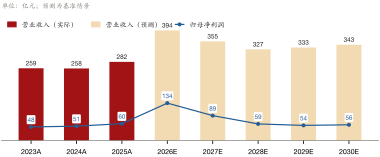
基准情景假设 2026E 收入增长 40%、毛利率升至 44%，随后运价回落。该路径与 2025 年实际毛利率 26.47% 存在显著落差；新船交付、运价及资本开支是后续检验估值的核心指标。
公司经营油轮、干散货、集装箱、滚装及 LNG 航运。2025 年油轮收入 102.89 亿元，干散货收入 87.69 亿元，集装箱收入 61.49 亿元，滚装收入 16.90 亿元。船型间的利润率和运价周期各异，合并数据需要分部拆解。
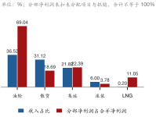
油轮船队净利润 41.91 亿元、同比增长 59.06%。LNG 船队收入 0.55 亿元，当前规模较小；手持订单 64 艘，2026 年预计交付 28 艘。交付将同步增加运力、折旧与资本投入。
| 指标 | 2023A | 2024A | 2025A |
|---|---|---|---|
| 营业收入（亿元） | 258.81 | 257.99 | 281.77 |
| 利润总额（亿元） | 54.15 | 59.52 | 68.75 |
| 归母净利润（亿元） | 48.37 | 51.07 | 60.12 |
| 扣非归母净利润（亿元） | 46.40 | 50.15 | 50.24 |
| 经营现金流净额（亿元） | 89.17 | 84.76 | 90.55 |
| 总资产（亿元） | — | 706.19 | 820.55 |
| 归母净资产（亿元） | — | 400.44 | 430.06 |
| 基本每股收益（元） | 0.60 | 0.63 | 0.74 |
| 加权平均 ROE | 13.25% | 13.21% | 14.55% |
| 净现比（倍） | 1.84 | 1.66 | 1.51 |
全年归母净利润 60.12 亿元，同比增长 17.71%；扣非归母净利润 50.24 亿元，同比增长 0.18%。非经常性损益 9.88 亿元，因而判断盈利中枢时应同时观察扣非结果。
2025 年 VLCC 运力增长 0.2%，15 年以上老龄运力占比 44%。供给约束是油轮景气的重要背景；后续盈利水平仍取决于实际运价和船队营运率。
2025 年营业收入 281.77 亿元，同比增长 9.22%；归母净利润 60.12 亿元，同比增长 17.71%；扣非归母净利润 50.24 亿元，同比增长 0.18%。非经常性损益 9.88 亿元，对表观利润增长有明显贡献。
| 亿元 / % | 2025A | 2024A | 同比 |
|---|---|---|---|
| 营业收入 | 281.77 | 257.99 | +9.22% |
| 营业成本 | 207.18 | 184.67 | +12.19% |
| 税金及附加 | 0.41 | 1.27 | -67.38% |
| 销售费用 | 1.14 | 1.08 | +5.76% |
| 管理费用 | 9.76 | 8.19 | +19.17% |
| 研发费用 | 0.28 | 0.19 | +48.41% |
| 财务费用 | 11.60 | 10.57 | +9.77% |
| 营业利润 | 68.09 | 59.55 | +14.33% |
| 归母净利润 | 60.12 | 51.07 | +17.71% |
| 扣非归母净利润 | 50.24 | 50.15 | +0.18% |
| 基本每股收益（元） | 0.74 | 0.63 | +17.46% |
| 毛利率 | 26.47% | 28.42% | -1.95 pp |
| 销售费用率 | 0.40% | 0.42% | -0.01 pp |
| 管理费用率 | 3.46% | 3.17% | +0.29 pp |
| 研发费用率 | 0.10% | 0.07% | +0.03 pp |
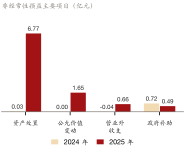
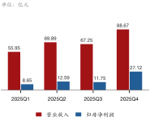
营业成本 207.18 亿元，同比增长 12.19%；综合毛利率 26.47%，同比下降 1.95 个百分点。季度收入、利润与现金流数据列于下表，重点观察成本压力在后续期间的变化。
油轮船队收入 102.89 亿元，油轮船队净利润 41.91 亿元、同比增长 59.06%。板块利润增速高于收入增速；分船型运价与运量贡献的精确拆分留待后续披露。
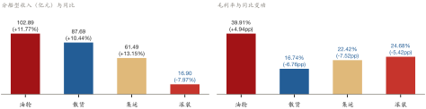
| 主营业务分行业 | 收入（亿元） | 收入同比 | 成本同比 | 毛利率 | 毛利率变动 | 收入占比 |
|---|---|---|---|---|---|---|
| 油轮运输 | 102.89 | +11.77% | +3.29% | 39.91% | +4.94 pp | 36.52% |
| 散货船运输 | 87.69 | +10.44% | +20.20% | 16.74% | -6.76 pp | 31.12% |
| 集装箱运输 | 61.49 | +13.15% | +25.30% | 22.42% | -7.52 pp | 21.82% |
| 滚装船运输 | 16.90 | -7.97% | -0.83% | 24.68% | -5.42 pp | 6.00% |
| LNG运输 | 0.55 | +83.16% | +144.28% | 28.87% | -17.80 pp | 0.20% |
干散货船队收入同比增长 10.45%，干散货运输成本同比增长 20.20%。程租运费同比增长 228.23%，船舶折旧费同比增长 29.44%，租入运力与折旧增加压缩了增量收入的利润空间。
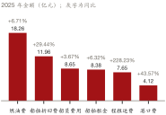
集装箱船队收入同比增长 13.16%，集装箱运输成本同比增长 25.30%，其中船舶租金同比增长 71.76%；滚装船队收入同比下降 7.97%，滚装船队净利润同比下降 31.91%。两项业务均面临收入与成本变化不匹配的压力。
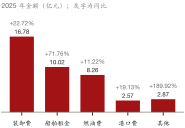
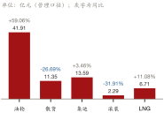
LNG 分部收入 0.55 亿元，对当前合并收入贡献较小。分部经营表和分行业表存在口径差异，相关数值在表格中分别标示；跨表比较应以同一口径为准。
公司手持订单 64 艘，预计 2026 年交付 28 艘。交船扩大可用运力，也增加折旧；收入兑现还取决于交付时间、营运率与实际运价。
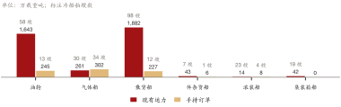
已签约未确认的资本性支出 358.72 亿元，在建工程 114.09 亿元，同比增长 73.99%。未来几年资本支出强度较高，需要结合经营现金流和融资结构观察。
| 资本开支与承诺 | 2025 | 2024 |
|---|---|---|
| 购建长期资产支付的现金（亿元） | 77.97 | 75.50 |
| 资本开支 / 营业收入 | 27.67% | — |
| 资本开支 / 经营现金流 | 86.11% | — |
| 新造船项目本年投入（亿元） | 100.38 | — |
| 在建工程（亿元） | 114.09 | 65.57 |
| 已签约未确认资本性支出（亿元） | 358.72 | — |
| 资本承诺 / 当年资本开支（倍） | 4.60 | — |
| 资本承诺 / 所有者权益 | 81.99% | — |
| 2026 年预计新造船交付（艘） | 28 | — |
综合毛利率 26.47%，同比下降 1.95 个百分点；净利率 21.54%，同比提高 1.35 个百分点。毛利以下项目对净利润形成贡献，扣非净利润增速仅 0.18%。
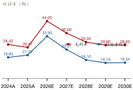
干散货程租运费同比增长 228.23%，集装箱船舶租金同比增长 71.76%。运力扩张与租入成本同时上行，后续需要观察新船投用后的单位成本变化。
油轮船队净利润同比增长 59.06%，非经常性损益 9.88 亿元。估值预测应分别考虑油轮周期性收益与非经常性项目，避免把本期表观利润增速直接外推。
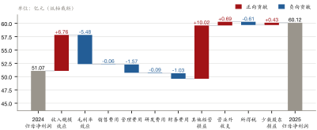
年末资产总计 820.55 亿元，同比增长 16.19%；资产负债率 46.68%，同比提高 4.52 个百分点。短期借款 104.04 亿元，长期借款 128.03 亿元；扩表与杠杆同步上升。
| 项目 | 2025 年末 | 2024 年末 | 同比 |
|---|---|---|---|
| 货币资金（亿元） | 47.21 | 45.89 | +2.87% |
| 应收账款（亿元） | 13.85 | 11.48 | +20.66% |
| 存货（亿元） | 13.11 | 14.18 | -7.54% |
| 合同负债（亿元） | 3.56 | 3.00 | +18.94% |
| 应付账款（亿元） | 18.36 | 18.60 | — |
| 总资产（亿元） | 820.55 | 706.19 | +16.19% |
| 资产负债率 | 46.68% | 42.16% | +4.52 pp |
| 净现比（倍） | 1.51 | 1.66 | — |
应收账款 13.85 亿元，同比增长 20.66%；在建工程 114.09 亿元，同比增长 73.99%。新船交付前后，资金占用和折旧将影响现金流与利润的匹配。
经营现金流净额 90.55 亿元，同比增长 6.83%。分季度现金流列于图表，第四季度高于第一季度；全年现金流仍需扣除船队更新所需资本开支。
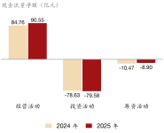
2025 年现金分红 25.84 亿元，现金分红率 42.98%。船队更新期的股东回报需要由经营现金流和融资安排共同支持；预测采用 43% 的分红率假设。
| 现金分红 | 2025 |
|---|---|
| 2025 年度现金分红（亿元） | 25.84 |
| 其中：中期（亿元） | 5.65 |
| 年度（亿元） | 20.19 |
| 每 10 股派息（元，含税） | 3.2 |
| 现金分红率 | 42.98% |
| 年度现金分红同比 | +24.58% |
| 回购与累计回报 | 2025 |
|---|---|
| 已回购股份金额（亿元） | 3.11 |
| 分红和回购占归母净利润 | 48.14% |
| 回购注销股份（股） | 69,267,851 |
| 回购注销占期初总股本 | 0.85% |
| 近三年分红与回购 / 年均净利润 | 132.34% |
基准情景假设 2026E 收入增长 40%、毛利率升至 44%；2027E、2028E 收入分别下降 10%、8%，毛利率分别回落至 36%、30%。这是对运价周期和交船节奏的情景设定，实际路径须由后续披露验证。
| 关键假设（基准情景） | 2026E / 2027E / 2028E | 依据 |
|---|---|---|
| 营业收入增速 | +40% / -10% / -8% | 2026E 油轮运价高点 + 28 艘新船交付；2027～2028E 地缘溢价消退（第 1、4、5 节） |
| 毛利率 | 44% / 36% / 30% | 油轮运价弹性；2029E 起回归周期中枢，略高于 2025A（第 4、6 节） |
| 经营费用率（轧差） | -5% / -5% / -5% | 营业成本含船舶折旧致轧差为负；剔除资产处置收益（第 6 节） |
| 资本开支 / 营业收入 | 28% / 28% / 24% | 资本承诺 358.72 亿元集中于 2026～2028 年支付（第 5 节） |
| 折旧率（期初 PP&E） | 4.71% / 4.71% / 4.71% | 取 2025A；新船交付后折旧随 PP&E 增加（第 7 节） |
| 所得税率 | 11.69% | 取 2025A 有效税率，境外单船公司为主（第 6 节） |
| 现金分红率 | 43% | 与 2025 年度一致（第 8 节） |
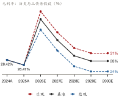
基准情景下，2026E 归母净利润 133.73 亿元、EPS 1.66 元；2027E 分别为 88.81 亿元、1.10 元；2028E 分别为 59.12 亿元、0.73 元。2026E 毛利率较 2025 年实际水平明显抬升，是盈利预测中最敏感的环节。
| 指标 | 2024A | 2025A | 2026E | 2027E | 2028E | 2029E | 2030E |
|---|---|---|---|---|---|---|---|
| 营业收入（亿元） | 257.99 | 281.77 | 394.48 | 355.03 | 326.63 | 333.16 | 343.16 |
| 同比增长 | -0.32% | +9.22% | +40.00% | -10.00% | -8.00% | +2.00% | +3.00% |
| 归母净利润（亿元） | 51.07 | 60.12 | 133.73 | 88.81 | 59.12 | 53.85 | 56.06 |
| 同比增长 | +5.59% | +17.71% | +122.43% | -33.59% | -33.43% | -8.91% | +4.10% |
| 每股收益（元） | 0.63 | 0.74 | 1.66 | 1.10 | 0.73 | 0.67 | 0.69 |
| 毛利率 | 28.42% | 26.47% | 44.00% | 36.00% | 30.00% | 28.00% | 28.00% |
| 归母净利率 | 19.80% | 21.34% | 33.90% | 25.01% | 18.10% | 16.16% | 16.34% |
| ROE（加权平均） | 13.21% | 14.55% | — | — | — | — | — |
| P/E（倍） | 32.0 | 27.2 | 12.2 | 18.3 | 27.5 | 30.2 | 29.0 |
基准 WACC 为 8.36%，永续增长率为 1.5%，DCF 每股价值 7.51 元。相对 2026-09-30 参考股价 20.15 元的空间为 -62.8%。经营预测与折现参数均取自分析师情景假设。
| 折现参数 | 取值 |
|---|---|
| 无风险利率 | 1.80% |
| β | 1.20 |
| 股权风险溢价 | 6.50% |
| 股权成本 | 9.60% |
| 税后债务成本 | 3.40% |
| 目标负债占比 | 20% |
| WACC（基准） | 8.36% |
| 永续增长率 | 1.5% |
| 退出 EV/EBITDA（交叉验证，倍） | 6.0 |
| 亿元 | 2026E | 2027E | 2028E | 2029E | 2030E |
|---|---|---|---|---|---|
| 营业收入 | 394.48 | 355.03 | 326.63 | 333.16 | 343.16 |
| EBIT | 165.45 | 114.08 | 80.13 | 74.11 | 76.63 |
| EBIT 利润率 | 41.94% | 32.13% | 24.53% | 22.24% | 22.33% |
| 所得税 | 19.35 | 13.34 | 9.37 | 8.67 | 8.96 |
| NOPAT | 146.10 | 100.74 | 70.76 | 65.44 | 67.67 |
| 加：折旧摊销 | 27.85 | 31.48 | 34.19 | 35.84 | 36.61 |
| 减：资本开支 | 110.45 | 99.41 | 78.39 | 59.97 | 44.61 |
| 减：营运资本增加 | 5.19 | -2.10 | -1.43 | 0.04 | 0.31 |
| FCFF | 58.30 | 34.91 | 27.99 | 41.27 | 59.36 |
| 折现期（年） | 0.5 | 1.5 | 2.5 | 3.5 | 4.5 |
| FCFF 现值 | 56.01 | 30.95 | 22.90 | 31.16 | 41.36 |
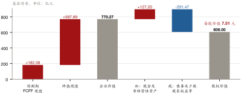
| 股权价值桥（基准情景） | 亿元 |
|---|---|
| 企业价值 | 770.27 |
| 加：货币资金 | 47.21 |
| 加：非经营性资产净额（明细见附录） | 79.99 |
| 减：有息负债 | -272.71 |
| 减：租赁负债 | -11.27 |
| 减：少数股东权益 | -7.49 |
| 股权价值 | 606.00 |
| 总股本（亿股） | 80.75 |
| 每股价值（元） | 7.51 |
| 非经营性资产净额（2025 年末） | 亿元 |
|---|---|
| 长期股权投资 | 86.74 |
| 其他权益工具投资 | 0.02 |
| 减：长期应付款（主要为租赁公司借款） | -6.77 |
| 合计 | 79.99 |
悲观、乐观情景每股价值分别为 2.61 元和 12.59 元；基准情景终值占企业价值 76.3%。预测采用合并收入和毛利率路径；运价与终值假设共同决定估值区间。
| 情景 | 收入增速（2026E） | 毛利率（2026E） | 终期毛利率 | WACC | 永续增长 | 企业价值（亿元） | 每股价值（元） | 较参考股价 | 终值占比 |
|---|---|---|---|---|---|---|---|---|---|
| 悲观 | +25% | 40% | 24% | 8.86% | 1.0% | 375 | 2.61 | -87.1% | 77.9% |
| 基准 | +40% | 44% | 28% | 8.36% | 1.5% | 770 | 7.51 | -62.8% | 76.3% |
| 乐观 | +48% | 47% | 31% | 8.11% | 2.0% | 1,181 | 12.59 | -37.5% | 76.5% |
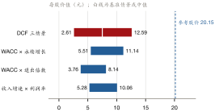
| WACC ＼ g | 0.5% | 1.0% | 1.5% | 2.0% | 2.5% |
|---|---|---|---|---|---|
| 7.36% | 7.83 | 8.46 | 9.20 | 10.08 | 11.14 |
| 7.86% | 7.13 | 7.66 | 8.29 | 9.01 | 9.88 |
| 8.36% | 6.52 | 6.98 | 7.51 | 8.12 | 8.83 |
| 8.86% | 5.98 | 6.38 | 6.83 | 7.35 | 7.95 |
| 9.36% | 5.51 | 5.85 | 6.25 | 6.69 | 7.20 |
| WACC ＼ 退出倍数 | 4x | 5x | 6x | 7x | 8x |
|---|---|---|---|---|---|
| 7.36% | 4.21 | 5.19 | 6.17 | 7.16 | 8.14 |
| 7.86% | 4.09 | 5.05 | 6.01 | 6.97 | 7.93 |
| 8.36% | 3.98 | 4.92 | 5.86 | 6.80 | 7.73 |
| 8.86% | 3.87 | 4.79 | 5.70 | 6.62 | 7.54 |
| 9.36% | 3.76 | 4.66 | 5.56 | 6.45 | 7.35 |
| 收入增速 ＼ 利润率 | -3.0pp | -1.5pp | +0.0pp | +1.5pp | +3.0pp |
|---|---|---|---|---|---|
| -2pp | 5.28 | 6.01 | 6.74 | 7.47 | 8.20 |
| -1pp | 5.59 | 6.35 | 7.12 | 7.88 | 8.64 |
| +0pp | 5.91 | 6.71 | 7.51 | 8.30 | 9.10 |
| +1pp | 6.25 | 7.08 | 7.91 | 8.74 | 9.57 |
| +2pp | 6.60 | 7.46 | 8.33 | 9.19 | 10.06 |
基准 DCF 每股价值 7.51 元，低于参考股价 20.15 元，评级为“卖出”。2026E 的 40% 收入增长及 44% 毛利率构成关键假设；悲观至乐观情景区间为 2.61～12.59 元，运价数据与交船进度将决定估值路径。
| 利润表（百万元） | 2025A | 2026E | 2027E | 2028E | 2029E | 2030E |
|---|---|---|---|---|---|---|
| 营业收入 | 28,177 | 39,448 | 35,503 | 32,663 | 33,316 | 34,316 |
| 营业成本 | 20,718 | 22,091 | 22,722 | 22,864 | 23,988 | 24,707 |
| 毛利 | 7,460 | 17,357 | 12,781 | 9,799 | 9,329 | 9,608 |
| 经营费用（不含折旧摊销） | -2,016 | -1,972 | -1,775 | -1,633 | -1,666 | -1,716 |
| 折旧摊销 | 2,396 | 2,785 | 3,148 | 3,419 | 3,584 | 3,661 |
| EBIT（经营性） | 7,080 | 16,545 | 11,408 | 8,013 | 7,411 | 7,663 |
| 所得税 | 804 | 1,788 | 1,188 | 791 | 720 | 750 |
| 净利润 | 6,071 | 13,503 | 8,967 | 5,970 | 5,438 | 5,660 |
| 归母净利润 | 6,012 | 13,373 | 8,881 | 5,912 | 5,385 | 5,606 |
| 每股收益（元） | 0.74 | 1.66 | 1.10 | 0.73 | 0.67 | 0.69 |
| 资产负债表（百万元） | 2025A | 2026E | 2027E | 2028E | 2029E | 2030E |
|---|---|---|---|---|---|---|
| 货币资金 | 4,721 | 3,638 | 2,166 | 1,292 | 1,974 | 4,370 |
| 应收账款 | 1,385 | 1,939 | 1,746 | 1,606 | 1,638 | 1,687 |
| 存货 | 1,311 | 1,398 | 1,438 | 1,447 | 1,518 | 1,564 |
| 固定资产+在建工程 | 53,587 | 61,848 | 68,641 | 73,061 | 75,475 | 76,275 |
| 其他资产 | 21,050 | 21,050 | 21,050 | 21,050 | 21,050 | 21,050 |
| 资产总计 | 82,055 | 89,873 | 95,041 | 98,456 | 101,655 | 104,945 |
| 应付账款 | 1,836 | 1,958 | 2,014 | 2,027 | 2,126 | 2,190 |
| 有息负债（含租赁） | 28,398 | 28,398 | 28,398 | 28,398 | 28,398 | 28,398 |
| 其他负债 | 8,066 | 8,066 | 8,066 | 8,066 | 8,066 | 8,066 |
| 股本、资本公积及其他权益 | 43,755 | 43,755 | 43,755 | 43,755 | 43,755 | 43,755 |
| 留存收益（预测期累计） | 0 | 7,697 | 12,808 | 16,211 | 19,310 | 22,537 |
| 负债和权益总计 | 82,055 | 89,873 | 95,041 | 98,456 | 101,655 | 104,945 |
| 现金流量表（百万元） | 2025A | 2026E | 2027E | 2028E | 2029E | 2030E |
|---|---|---|---|---|---|---|
| 净利润 | 6,071 | 13,503 | 8,967 | 5,970 | 5,438 | 5,660 |
| 折旧摊销 | 2,396 | 2,785 | 3,148 | 3,419 | 3,584 | 3,661 |
| 营运资本增加 | 154 | 519 | -210 | -143 | 4 | 31 |
| 经营活动现金流 | 9,055 | 15,769 | 12,326 | 9,532 | 9,017 | 9,290 |
| 资本开支 | 7,797 | 11,045 | 9,941 | 7,839 | 5,997 | 4,461 |
| 现金分红 | — | -5,806 | -3,856 | -2,567 | -2,338 | -2,434 |
| 期末现金 | 4,721 | 3,638 | 2,166 | 1,292 | 1,974 | 4,370 |
| 主要财务比率 | 2025A | 2026E | 2027E | 2028E | 2029E | 2030E |
|---|---|---|---|---|---|---|
| 营业收入增长率 | +9.22% | +40.00% | -10.00% | -8.00% | +2.00% | +3.00% |
| 归母净利润增长率 | +17.71% | +122.43% | -33.59% | -33.43% | -8.91% | +4.10% |
| 毛利率 | 26.47% | 44.00% | 36.00% | 30.00% | 28.00% | 28.00% |
| 归母净利率 | 21.34% | 33.90% | 25.01% | 18.10% | 16.16% | 16.34% |
| ROE（加权平均） | 14.55% | — | — | — | — | — |
| 每股收益（元） | 0.74 | 1.66 | 1.10 | 0.73 | 0.67 | 0.69 |
| P/E（倍） | 27.2 | 12.2 | 18.3 | 27.5 | 30.2 | 29.0 |
DCF 采用 FCFF 口径、年中折现，经营预测取自三表模型；EBIT = 利润总额 + 财务费用 − 投资收益 − 公允价值变动收益，剔除的投资类资产在股权桥中逐项加回。年报未披露分船型 TCE，预测采用合并收入与毛利率；营业成本已含船舶折旧。使用权资产摊销与租赁负债处理可能重复扣减；长期股权投资按账面加回，长期应付款按类负债扣减。预测期归母净利润 = 三表模型净利润 × 0.9903（2025 年归母净利润/净利润，假设少数股东损益占比不变）；预测期 EPS 按 2025 年末总股本摊薄，未考虑回购注销对股本的影响。 估值输入（无风险利率、β、股权风险溢价、永续增长率、分部量价与费用率）为分析师假设，参考股价为外部行情数据。
财务与经营数据来自公司 2025 年年度报告：财务数据 104 项、经营数据 447 个数字由模型读取年报后， 经 FinAgent 逐字核对原文并与规则通道交叉校验，19 项勾稽全部通过；单价、占比、增速等比率与全部估值计算由确定性程序完成， 正文数字经数字护栏核对出处。逐项页码见估值模型 model.xlsx“历史财务”“经营数据”页与 financials/extras.json。 参考股价为外部行情数据（2026-09-30 收盘）。
| 输入文件（运行 20261002-005015-valuation） | SHA-256 |
|---|---|
sandbox/annual_reports/601872_招商轮船_2025_年度报告.pdf | 3fe6f99980f9f0c2… |
sandbox/phase2/inputs/招商轮船_facts_supplemented.json | fe45e989ad8b18fb… |
data/extractions/招商轮船_2025/extras.json | bf4f341a03134c0c… |
data/extractions/招商轮船_2025/valuation_assumptions.json | 6c6325958ef113d4… |
本报告中直接引用的财务与经营数据为事实；以“主要系”“反映”等表述的归因为基于数据的推论；以“我们认为”“我们预计” 表述的判断、盈利预测、估值与评级为观点，依赖第 9、10 节所列假设。
本报告由 FinAgent 投研智能体系统生成，系 2026 北京市大学生金融人工智能竞赛（主题：金融投研智能体构建）的参赛作品，仅用于展示金融人工智能研究方法与技术能力。本报告的编制主体不是经中国证券监督管理委员会核准或备案的证券公司、证券投资咨询机构或其他持牌金融机构，参与编制的人员亦不具有证券投资咨询执业资格。本报告不是证券公司、证券投资咨询机构依据《证券法》《证券、期货投资咨询管理暂行办法》《发布证券研究报告暂行规定》等法律法规发布的证券研究报告，未经任何持牌机构的合规审查，不构成对任何主体开展证券投资咨询业务。
本报告中的任何内容，包括但不限于投资评级、每股价值、估值区间、盈利预测、目标空间及相关分析判断，均不构成、亦不应被视为买卖或持有任何证券、金融工具或其他投资标的的要约、要约邀请、推荐或投资建议，也不构成法律、税务、会计或其他专业意见。本报告未考虑任何特定读者的投资目标、财务状况、风险承受能力或特殊需求。读者不应以本报告取代其独立判断，据此作出的任何投资决策及其后果，由读者自行承担。
本报告所载财务与经营数据来源于上市公司依法公开披露的定期报告；参考股价等市场数据来源于第三方公开行情，报告中已注明。编制者已通过程序化方式对所引用数据与原始披露文件进行逐字核对，但不对原始披露信息及第三方数据的真实性、准确性、完整性、及时性作出任何明示或默示的保证。原始信息如存在错误、遗漏或事后更正、调整，本报告不承担相应责任，亦不承诺随之更新。
本报告的文字分析由大语言模型参与撰写，数值计算由确定性程序完成，并经数字核对程序校验。尽管如此，人工智能生成内容仍可能存在理解偏差、表述不当、事实归因错误或其他未能识别的缺陷。本报告未经持牌证券分析师复核签署，读者应对其中的分析与结论保持审慎，并以原始披露文件为准。
本报告中的盈利预测、估值结果、情景分析与敏感性分析均为前瞻性陈述，依赖于编制者设定的假设，包括但不限于分部销量与吨价增速、毛利率与费用率路径、资本开支、分红率、折现率及永续增长率等。上述假设为观点而非事实，可能因宏观经济、行业政策、市场需求、公司经营及其他不可预见因素而与实际情况存在重大差异。过往业绩不代表未来表现，预测结果不构成对未来业绩或证券价格的任何承诺或保证。投资评级由模型按报告所列规则机械生成，不代表任何机构或个人的投资意见。
在适用法律允许的最大范围内，本报告的编制者、竞赛组织方及相关参与方，对任何人因使用、引用或依赖本报告全部或部分内容而直接或间接遭受的任何损失或损害（包括但不限于投资损失、利润损失、数据损失及其他经济损失），不承担任何法律责任。
本报告的编制不受所研究上市公司或其关联方的委托、资助或指示，编制者与所研究上市公司之间不存在已知的委托关系。本报告观点可能与其他研究机构或市场参与者的观点不一致，编制者无义务就此作出说明。
本报告的版权归编制者所有。本报告仅供竞赛评审与学术交流使用，未经编制者书面许可，任何机构或个人不得以任何形式复制、转载、刊登、发表、修改或向第三方传播本报告的全部或部分内容，不得将本报告用于任何商业目的，亦不得以任何方式暗示本报告系持牌机构发布的证券研究报告。经许可引用的，应注明出处，并不得对本报告作出有悖原意的删节或修改。
本声明及因本报告产生的任何争议，适用中华人民共和国法律（为本声明之目的，不含香港特别行政区、澳门特别行政区及台湾地区法律）。
读者阅读或使用本报告，即视为已阅读、理解并同意本声明的全部内容。本声明与报告正文不一致的，以本声明为准。